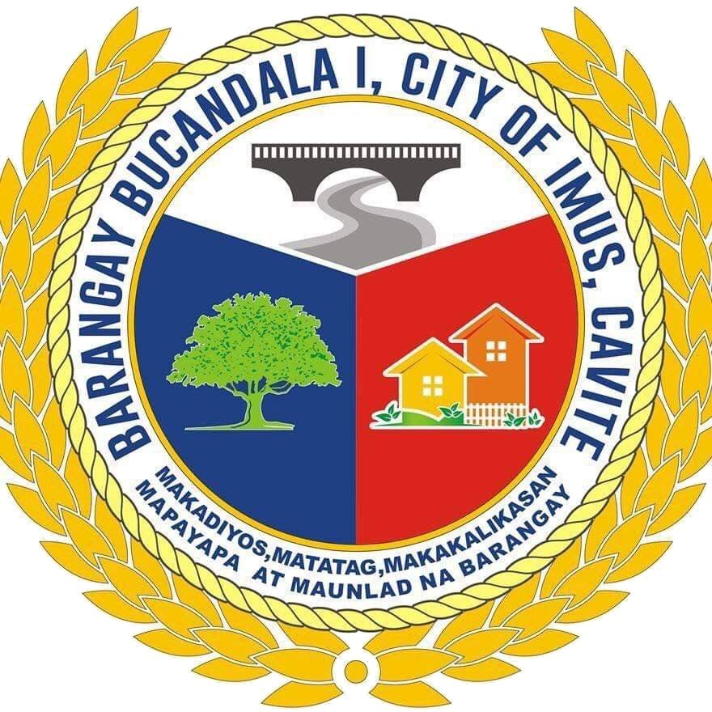

Latest Announcements
- Barangay Clean-Up Drive - April 5, 2025
- New Health Services Available - Free Check-ups for Seniors
- Community Meeting - April 10, 2025
- Upcoming Election Information

Barangay Captain: Santiaguel, Ferdinand Apolinar
A brief introduction to the Barangay Captain and his role in the community.
- Phone: 0917-123-4567
- Email: captain.juan@bucandala.gov.ph
- Office: Barangay Hall, Bucandala 1
History of Barangay Bucandala
Bucandala I is a barangay in the city of Imus, in the province of Cavite. Its population as determined by the 2020 Census was 9,935. This represented 2.00% of the total population of Imus